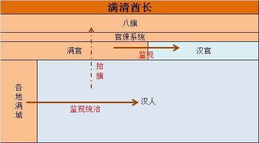

史学界和网络上热衷于讨论一个话题——以各种“中西文化对比”来论证中国为什么没能近代化。由于或是蠢或是坏，得出的结论大多非常无厘头：什么汉人劣根性，什么小农经济费拉，什么海洋文明高贵。
今天我就想说
所有类似这类“中西对比”的问题，全都是伪命题！
这类问题本身压根不成立。它们至少犯了三个错误：
-错误一是把汉人一个民族和西方N个民族合起来做对比
错误二则是，就算从文化的角度来对比，它们比较的也压根不是汉人传统，而是满清统治下的“伪传统”。**
-错误三则是，一定要求汉人“自发”近代化，而不考虑近代化的这些技术、产业、科学、乃至思想，都是非常容易通过学习得到的。世界上除了西欧几个民族外，其他所有民族都是通过学习获得近代化的成果的。
做这种比较的人一方面对汉人“高标准严要求”，一方面一旦汉人达不到自发近代化，就把汉人批判得费拉不堪，一文不值。
是蠢的坏，诸位看官自行分辨。
我在这个问题下面已经吐槽过这一点
如何看待本位文化与全盘西化之争？
最近又有朋友跟我讨论这一点，我决定把我们的聊天记录整理修改一下放上来。
请仔细阅读，看完你就明白为什么汉人没能顺利近代化，以及为什么我说所谓李约瑟难题是S.B问题了。
历史爱好者：我一直有一个问题想问。
历史爱好者：为什么中国（汉人）没能近代化？为什么近代化发生在西方？李约瑟难题到底该如何解答？
我：首先来明确一个定义，什么是近代化？
历史爱好者：（百度中……）
历史爱好者：没有一个明确的定义，大概指经济上的工业化、商品化，政治上的法制化、民主化，思想上的人性化、科学化等等……
我：如果给不出抽象的定义，可以举具体的过程嘛！
历史爱好者：我历史也不太好，凭感觉的话呢，大概是文艺复兴，然后地理大发现，大航海，然后现代科学技术奠基，启蒙运动，最后是工业革命之类的吧？哦对了，还要考虑到古希腊人发明的逻辑学和数学，给现代科技打下了基础。
我：好，就依你这个来。
第一幕：西方率先近代化的本质是什么？
我：首先明确一点，所谓“西方文明”“东方文明”只是一个地理上的相对概念，是一个虚指。大明的百姓会觉得帖木儿和奥斯曼统统是西方，而这两个穆斯林国家在波兰人和东罗马人看来是妥妥的东方，更不要说在不列颠人眼中，东罗马也几乎是个“东方文明古国”了。所以所谓西方和东方只有泛指的意义，不好太拿来分析问题，我这样讲有问题吗？
乱入的河殇余孽：放屁！西方明明是海洋文明！充满进取与开拓精神。东方是费拉的农耕文明，当然比不过人家！
我：首先我先澄清一点吧，根本就没有海洋文明这种东西。就拿典型的所谓“西方国家”——法国、德国来说，他们全都是农耕文明，也是所谓“小农经济”。
乱入的河殇余孽：那英国、西班牙、美国呢？
我：在地理大发现之前，英国（盎格鲁撒克逊人）人还在不列颠岛上种地，还被诺曼人入侵统治了；西班牙人被摩尔人征服，直到13世纪还在忙活收复失地，跟大海完全不沾边（除了捕鱼）。至于美国人，美利坚建国的基本盘就是独立13州的农民和手工业者，跟海洋屁关系没有。
我：实际上你们心目中的“海洋文明”只持续了从地理大发现到现在，这短短几百年的时间而已。而地理大发现本身就是近代化的一个很重要的部分。拿“近代化的一个重要过程”来论证“为什么他们能率先近代化”，不觉得有点搞笑？
我：另外我吐槽一句，你们这些河殇派炮制的“海洋文明”的概念，本身就是连舶来品都算不上的玩意。西方的历史研究里压根就没有ocean civilization或者maritime civilization这类词组。你们去拿这个搜索论文，最有可能出现的可能是研究太平洋群岛上的汤加帝国的文章（笑）？一个从头到尾就是发明用来自轻自贱的词，就别在这瞎扯淡了。
我：回到刚才的问题上来，我觉得具体问题要具体分析，不能把西方一概而论视作一个整体。所谓西方和东方只有泛指的意义，不好太拿来分析具体问题，我这样讲有问题吗？
历史爱好者：没什么问题，在日本看来大明还是西方呢，就是个相对概念嘛，没什么不好理解的。可是这跟我们要说的有什么关系呢？
我：看看你的问题？“为什么近代化发生在西方？”
历史爱好者：意思是不应该以所谓“东方”“西方”作为落脚点来比较？那应该用什么呢？
我：当然是用“民族”啊！
历史爱好者：讲讲！
我：首先，你刚刚梳理的近代化路径基本没错：
1. 古希腊发明逻辑学和数学
2. 文艺复兴
3. 地理大发现
4. 现代科技奠基
5. 启蒙运动
我：希腊人发明了逻辑学和数学（确切来说是发现，不过这不重要）。没错吧？那么希腊人和西欧那些民族是不是同一个民族？
历史爱好者：希腊人和西欧的法兰克人、盎格鲁-撒克逊人、西哥特人等确实不是同一民族。古典希腊人的后代后来生活于东罗马帝国，后来被奥斯曼人征服，直到现代才复国。西欧那些民族则是当初灭亡西罗马帝国的日耳曼蛮族后代。
我：是这样没错，那么文艺复兴呢？文艺复兴发源于哪儿？
历史爱好者：北意大利城邦。
我：威尼斯热那亚这些城邦商业繁荣，且长期处于分裂中。这滋生了宽容开放的艺术氛围，带来了文艺复兴。没错吧？
历史爱好者：嗯，接下来是地理大发现。
历史爱好者：这个我熟悉，是两牙—西班牙和葡萄牙开启的。
我：西班牙和葡萄牙有何优势能让他们开启地理大发现呢？
历史爱好者：首先肯定是地缘啊，看地图也知道伊比利亚半岛是离美洲最近的。、
历史爱好者：其次两牙在某种意义上是有些……“中央集权”的，早期的很多航海家都是皇室大力资助去探索的，颇有种“集中力量办大事”的感觉。
历史爱好者：应该就是这两点让他们能率先开启“大航海时代”吧！
我：说得对。我们可以做一个情景假设——以北意大利城邦的条件，能否发现新大陆呢？以西班牙和葡萄牙的政治氛围和地缘，能否引领文艺复兴呢？
历史爱好者：恐怕是不行的……原因我刚才说了，这东西需要一定条件的。不过文艺复兴倒是给地理大发现提供了一些精神上的动力。
我：这也是我要说的，近代化本质是多民族的接力完成。两牙不可能引领文艺复兴，威尼斯热那亚也很难发现美洲。但是二者接力，这个过程就走下去了。地理大发现带来了更多原始积累，接下来的一步是什么呢？
历史爱好者：自然科学的奠基吧。
我：自然科学是谁奠基的？
历史爱好者：是牛顿——一个盎格鲁撒克逊人。《自然哲学与数学原理》，1687年出版。
我：下一步呢？
历史爱好者：启蒙运动吧，法国的市民社会最发达，于是启蒙运动先在那里出现。
我：跟之前的几步一样，一个民族先发，其他民族跟进。文艺复兴由南向北传遍欧洲；大航海时代整个西欧的船都涌向美洲参加三角贸易；启蒙思想也随大革命的炮火和拿破仑法典传遍全“西方”
历史爱好者：那我重新梳理一下，所谓西方率先近代化，实际上是这样的？——
古希腊人 ：发明逻辑学和数学
北意大利人 ：文艺复兴
伊比利亚人 ：地理大发现
盎撒人 ：现代科技奠基
法兰西人：启蒙运动
我：对。实际上还漏了一步——1.5东罗马帝国的存在保护了西欧诸民族免遭蛮族侵略。因为如果不幸在农业社会的积累期，或是近代前夕被蛮族侵略导致生产力大倒退，其后果是灾难性的，我将在后面讲这个问题。
历史爱好者：这样说下来，难道西方各民族真正的所谓优势，就是相互之间离得近，交流多，学得快？
我：没错，就是这样。
我：硬要说起来，西欧诸国的地缘还有一个优势——离蒙古高原和大兴安岭这个整个欧亚大陆最可怕的蛮族策源地最远，而且中间还有东罗马这个希腊-罗马人的民族国家当盾牌，让他们免受蛮族入侵打断文明之苦。
历史爱好者：啊，确实如此，欧亚大陆的等温线是倾斜的，越往东越冷，同时越东面的蛮族越是野蛮难缠。
历史爱好者：那俄罗斯近代化稍慢也就可以解释了？就是因为离得稍微远了一点？
我：没错。
历史爱好者：后来的各个列强里面，日本学得最慢，就是因为日本离得最远？
我：没错，就是这样。
历史爱好者：就这么简单？
我：就这么简单。
历史爱好者：那中国到底是因为什么没学会啊？
我：接下来我们就来好好聊聊这个问题。
第二幕：满清的殖民统治，导致汉人无法顺利近代化
我：我直接提观点：一个民族能近代化，有两个条件：其一是该民族农业时代的积累达到一定程度，其二是该民族在近代化浪潮到来时，未被蛮族殖民，能够无阻力地去学习。
历史爱好者：第一个很好理解，不然非洲早就近代化了（笑）
我：没错，日本近代化慢其实也有这个原因，日本的农业生产力一直不太行。人均财富、粮食等远低于明末的江南，明末的江南是真的富裕，并不比同时期的尼德兰差。
历史爱好者：明末……那接下来就到了……
我：不错，接下来就到了满清。你刚刚可能想问我：汉人是一二两个条件哪个不满足呢？我可以告诉你，都不满足。由于满清的到来，原本满足的两个条件，一下子都不满足了。
我：满清入关，数千万汉人死于非命。清初对比明末来看，耕地大幅减少，《天工开物》《齐民要术》等大批珍贵农业、手工业技术书籍失传，这还不包括那些至今未被今人所知，直接遗失与历史长河中的文物。有经验的老农、有手艺的匠人成批死于残酷的大屠杀，他们世代积累的经验和秘诀付之一炬。汉人一座座文明的城市变成尸横遍野的人间地狱，汉人一片片沃野良田变得荒芜人烟。此乃农业社会生产力的一大倒退。
历史爱好者：唉，满清入关确实是华夏的一大劫难。
我：还不只是这个。如果说满清像正常汉人王朝一样，对民间不严加控制，而是允许一定程度的社会自治的话，那么聪明勤劳的汉人还能从清初的苦难中慢慢缓过来。
我：然而满清不是这样的。“小族临大国”的立场和入关时候的累累罪行，让他们时时刻刻胆颤心惊，“满汉大防”是满清时时刻刻惦记的第一要务。满清依赖八旗和满城在全中国建立起了“深入.基层”的维.稳体系，汉人一旦有反抗的苗头就予以诛杀。这个所谓“反抗的苗头”的定义权当然也是掌握在满人手中的。比如如果有人聚众超过一定人数的话，满清统治者会认为此人图谋不轨，会直接将其处死。不管这个人是要造.反，还是只是想讲学、结伴游玩、或者与人合伙做生意。这意味着一切社会自治、民众的自发组织和结.社都宣告失效了，整个社会完全失活。
历史爱好者：嗯……
我：不仅如此，就算你放弃一切有危险的社会活动，专心在家寄情书本，吟诗做赋，一样有麻烦找上门来。
历史爱好者：这个我知道，文字狱是吧，乾隆年间就有百来起文字狱，牵连数万人。
我：关键是汉人被迫形成了一种麻木不仁，莫谈国事的氛围，随便想想就有掉脑袋的风险，整个民族既失去了行动上的自由，也失去了思想上的自由。真正成为了后来各路知识分子们所批判的““麻木的中国人”。当然这些近代知识分子错把满清的个例当作整个古代的典型来批判，这是大错特错的，而且造成了非常严重的后果，不过这又是另一个话题了。
我：请问在这种严密的监视与肆意的凌虐下，汉人何谈学习，更何谈创造？！
我：举个最简单的例子，满清中期有人提议发展火器，被乾隆以“骑射为满洲之本”的理由当即驳回？这是为什么？这是因为满清酋长乾隆清清楚楚地知道，发展火器之后，力量得到增强的不是他们满人，而是汉人。火器所需的训练要求少，火器列装后人力能最大限度地转化为战斗力，汉人的武力能得到极大的增强。所以发展火器对满人有什么好处呢？
我：对于国家来说最重要的军事科技的革新，满清都以满汉大防的角度来考虑问题。那么满清对于其他的汉人自发对近代化成就的学习，所会采取的态度，不就很明显了吗？终满清一朝，汉人不仅没有像以往历朝历代一样，出现数位大思想家、大科学家、大艺术家，哪怕一名都没有！就连像“大唐西域记”或者明末西法党的作品这样，介绍外来思想的翻译作品，也一个都没有出现！这难道是汉人自己的问题？这难道不是满清殖民者阻碍汉人近代化的明证？
历史爱好者：唉，别人蒸蒸日上的时候，我们却正好天灾人祸，明亡于满清，真是汉人的一大悲剧。
（长久的沉默）
第三幕：其他问题
历史爱好者：说实话你前面讲得都很有道理，但是我在网上也看了很多人的说法，他们都觉得就算是汉人政权中国也无法近代化。
我：这是什么道理？权责一致。全权者全责，无权者无责，满清垄断了全社会所有权力搞高压极.权，怎么问题反而是受压迫的汉人背？
历史爱好者：他们有好几种说法，我们挨个捋一捋。
历史爱好者：头一种说法是明朝皇帝为了统治稳定，也会阻止民间学习西方技术，阻碍近代化。
我：这个观点有两个地方立不住。第一：明朝皇帝不会阻碍汉人学习西方思想和技术，明末西法党就是明证。
我：第二，明朝（或者其他汉人朝代）和满清最大的区别就是，就算明朝皇帝想阻碍汉人学习西方思想和技术，他也做不到。
历史爱好者：为什么做不到呢？
我：因为汉人皇帝想专制的话，形不成一个凌驾于社会之上的共同体来帮助他“维稳”。什么是共同体呢？至少自己和子孙后代的身份不能轻易变化，不然形不成稳定的跟皇帝一起牟利的机制。皇帝本人是孤家寡人，必须靠自己统治社会。他可以搞文字狱和专制，不过这样就会闭目塞听，皇帝凭自己控制不了全社会，很快造反的让就要上门了。中国历史上有过一个本民族皇帝专制的案例，结果很快就迎来灭亡，他就是秦朝。所以本民族的皇帝必须得尊重社会自治，这样王朝才会长久。
我：异族统治就不会有这个问题，因为异族整体可以作为一个共同体凌驾于主体民族之上，典型的例子就是满清的八旗。满清酋长靠八旗来维持统治、镇压汉人，八旗紧紧坏绕在满清酋长周围，自带干粮，帮酋长维稳，因为这也是稳固自己的利益。
历史爱好者：意思是本民族的皇帝也可能搞极权，但是搞不长？但是异族统治，因为自带“基本盘”，所以能维持更久的极权统治？
我：没错，“基本盘”这个词用的好。极权无非是驯服社会。问题是本族皇帝形不成一个稳定的统治班子，能驯服社会50年就不错了。50年以后官僚就和社会同流合污了，社会传统自由和习惯法又回来了。满清却是到乾隆都能一直搞文字狱，搞高压极权驯服汉人社会。
官僚的子孙科举不中很快就会滑落，地主的孩子不做官的话没有什么太多政治权利，商人一个破产就回到平民，穷人家的孩子好好科举也能“阶级跃迁”。民族内个体身份是流动的，可变化的，但汉人永远是汉人，满人永远是满人。
我：归根结底，只有异族统治，才能摧毁社会固有的自由和法律，才能几百年连续“改造社会”。某些人心心念念的所谓“深入.基层”“从内而外地改造社会”，正是自成一体的殖民者才能做到的事情，真正的、长久的极.权统治，正是满清的舶来品，凭汉人王朝是做不到这一点的。
历史爱好者：这个问题我理解了一些，我回去在好好想想。我总觉得你的话语中暗示了一些什么别的、很重要的东西。
历史爱好者：第二种说法是：一些马克思主义者（或称左派）认为是儒家思想阻碍了汉人近代化，因为明清都用儒家思想，所以就算换了明朝或者其他汉人王朝，一样无法近代化。
我：儒家是经济基础还是上层建筑？
历史爱好者：是上层建筑
我：近代化呢？
历史爱好者：广义的近代化可能也包含一些思想领域的内容吧……不过确实，近代化首先体现在生产力的大发展上面。
我：这帮人还自称是马克思主义者？马克思是怎么论述经济基础和上层建筑的？
历史爱好者：经济基础决定上层建筑……
我：我不用多少什么了。另外我再提一句，日本也是儒家文化圈，日本人学近代化，学得怎么样？
历史爱好者：这个问题可以过了，我现在也弄不明白他们是怎么甩锅给儒家的了。
我：经过蒙元和清朝劣化的儒家倒是确实可以黑一黑，但那也是蒙元和满清的锅么，毕竟蛮族手里拿着刀，不肯合作的儒家士大夫都杀了，他们可以自由地改造儒家以合法化自己的统治。还是那句话，权责一致。
历史爱好者：还有一种说法，就是小农经济阻碍近代化。
我：说这话的人一定不知道法国也是所谓“小农经济”，另外这个小农经济阻碍近代化的逻辑是？
历史爱好者：可能是指小农经济缺乏变化，思想陈旧？
我：这又是上层建筑阻碍经济基础了？思想陈旧的人会被生产力提高的邻居抛下，成为工人被动进入近代化大潮，这不是各国近代化的正常操作？而且从明末西学东渐的情况来看，所谓“小农经济”完全是另外一种模样啊？江南士大夫女装盛行，甚至有人裸体上街；金瓶梅等市井小说在老百姓中极受欢迎，乡间贸易和市民生活多彩缤纷又欣欣向荣。所谓儒家思想顽固腐朽？所谓小农经济缺乏变化？从明末的情况来看，完全不是这样！
历史爱好者：还有人觉得地主阶级会阻碍近代化，理由是新兴的资产阶级会动摇自己的统治。
我：各国的资产阶级很多就是之前的地主阶级变的（笑）。其实在明末已经出现这种势头了。当新兴的生产方式和赚钱方式到来时，地主们非常乐意抛弃土地拥抱更优质的实业资本。谁会和钱过不去呢？
历史爱好者：唉，听你这么一说，确实如此，明明是很简单的殖民者的问题，为什么有很多人硬是喜欢“从自己身上找原因”呢？
历史爱好者：可能是我们从小被教育要从自己身上找原因吧，唉。
我：原因很简单啊，有些人希望汉人永远从自己身上找原因，希望汉人永远忽视自己作为殖民者和中间商，永远忽视自己长久以来的瞎折腾和剥削，所给汉人带来的伤害和副作用吧。
历史爱好者：啥？你是说满清？
我：是啊（笑）
历史爱好者：？
历史爱好者：唉，虽然你说了我们能在近代化到来时学习其他民族就好了，但果然我还是更希望我们能自发率先近代化啊。
我：你这个要求相当于让汉人把希腊、北意大利、伊比利亚、盎格鲁撒克逊等等各民族合力完成的诸多步骤，再自己走一遍啊（笑）。为什么要重复造轮子？汉人要记得，我们是伟大的民族，同时我们也只是诸民族中的一个，没必要做完其他民族一起才能做到的事。
我：实际上，只要接盘明朝的是一个汉族政权，在顺利近代化后，怎么着都会是个向南辐射南洋，向西挺进中亚，向北消灭蒙古与俄罗斯争夺西伯利亚的远东超级大国，是超大号的近代日本。
我：那个时空的汉共和国，那个时空的汉族，会是个传统文化不曾断代并得到妥善扬弃的民族，而不是错把各式各样满清“伪传统”当成真正的传统，并纠结是维护还是全盘抛弃的民族；那个时空的汉族，会是个昂扬向上，不断进取的汉族，而不是遇到哪怕不是自己导致的问题，也要强行“反思自己”的胆怯民族；那个时空的汉族，会是个文明强大，立于世界各民族之林的伟大民族，而不是苟且于重压之下，还面临着人口断层危机的可悲民族。
历史爱好者：呜呼哀哉！可惜随着1644的悲剧，这些我们再也见不到了。
总结：
学习其他民族的成果是非常正常的事情，也是非常应当的事情
所谓“西方率先近代化”的本质——多民族合力、环环接力：
-古希腊人 ：发明逻辑学和数学
-东罗马帝国 ：对抗波斯人、阿拉伯人、突厥人，客观上保护了欧洲腹地的农业
-生产力不受严重破坏
-北意大利人 ：文艺复兴
-伊比利亚人 ：地理大发现
-盎撒人 ：现代科技奠基
-法兰西人：启蒙运动
- 近代化需要两个条件：
-农业生产力足够发达
-能够不受殖民者阻碍地有效学习其他民族的成果
- 汉人为什么没能近代化？
-积累到明末的农业生产力、科学技术，全部在满清入侵的屠杀中灰飞烟灭
-满清在长达两个半世纪的统治中，为了维护自身地位一直阻碍汉人学习西方各民族的先进技术
- 为什么明朝不会阻碍近代化，但是满清会？
-满清的统治建立在“百万八旗”做基本盘的基础上，靠着这些“体制内人员”维稳，满清酋长能控制社会的方方面面，最大限度地钳制汉人发展。
-明朝皇帝是孤家寡人，没有所谓八旗基本盘，必须与文官士大夫和其他社会各界相互妥协。就算明朝皇帝想对社会施以严密控制，他也做不到。
-进一步讲，明朝皇帝没有“小族临大国”之顾虑，本身也没有必要去阻碍近代化。士大夫、地主等本身也没有必要去阻碍汉人近代化，相反，一旦近代化，摇身而变为资本家的他们是最大的受益者。
- 1644是中国近代一切悲剧的开始，也是汉人近代被殖民史的开端。
附两张图——汉人帝国和满清的社会结构对比：
